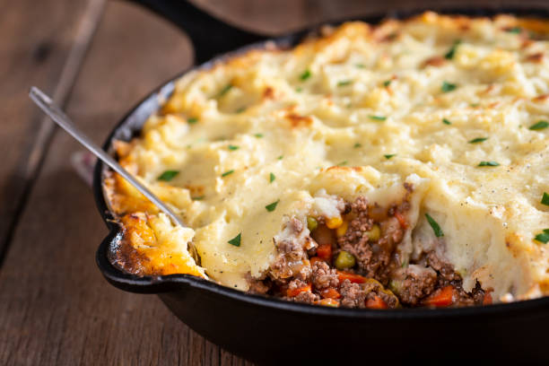

Fried Tacos
Home

Shepard's Pie
is a savoury dish of cooked minced meat topped with mashed potato and baked,
formerly also called Sanders or Saunders. The meat used may be either previously cooked or freshly minced.
The usual meats are beef or lamb. The terms shepherd's pie and cottage pie have been used interchangeably
since they came into use in the late 18th and early 19th centuries, although some writers insist that a shepherd's pie
should contain lamb or mutton, and a cottage pie, beef.
Here is a step-by-step recipe for authentic Shepherd's Pie, traditionally made with lamb and
topped with creamy mashed potatoes. This version includes a rich gravy and classic vegetables
like carrots, onions, and peas.
Ingredients
Mashed potato topping
- 2 lbs Russet or Yukon Gold potatoes, peeled and chopped
- 4 tbsp unsalted butter, softened
- 1/4 cup half-and-half or whole milk
- 1 egg yolk (optional, for a richer top)
- Salt and pepper to taste
Filling
- 2 tbsp olive oil
- 1 1/2 lbs ground lamb
- 1 medium yellow onion, finely chopped
- 2 medium carrots, peeled and diced
- 2 cloves garlic, minced
- 2 tbsp all-purpose flour
- 2 tbsp tomato paste
- 1 1/2 cups beef or lamb broth
- 1 tsp Worcestershire sauce
- 1 tsp fresh rosemary, finely chopped
- 1 tsp fresh thyme, finely chopped
- 1 cup frozen peas
- Salt and pepper to taste
Instructions
- Prepare the potatoes:
Place the peeled and chopped potatoes in a large pot and cover with cold, salted water.
Bring to a boil, then reduce the heat to a simmer and cook until fork-tender, about 15 to 20 minutes.
Drain the potatoes in a colander and let them sit for a minute to steam and dry out.
Return the potatoes to the pot. Add the butter, half-and-half (or milk), salt, and pepper.
Mash the potatoes until smooth and creamy. For an extra-rich topping, mix in the egg yolk. Set aside.
- Cook the filling:
Preheat your oven to 400°F (200°C).
Heat the olive oil in a large skillet over medium-high heat.
Add the ground lamb, breaking it up with a wooden spoon, and cook until browned.
Drain the excess fat from the pan.
Return the pan to the stove and add the chopped onion and carrots. Sauté until the vegetables begin to soften, about 5 to 8 minutes.
Add the minced garlic, chopped rosemary, and thyme. Cook for another minute until fragrant.
Stir in the flour and tomato paste. Cook for 1 to 2 minutes, stirring constantly, to cook out the raw flour taste.
- Simmer the gravy: Pour in the beef or lamb broth and Worcestershire sauce.
Bring the mixture to a simmer, scraping up any browned bits from the bottom of the pan.
Cook for about 5 to 10 minutes, or until the liquid has thickened into a rich gravy.
Stir in the frozen peas and season with salt and pepper to taste.
- Assemble and bake the pie: Transfer the meat filling to a 9x13-inch baking dish or a 10-inch oven-safe skillet.
Spread the mashed potatoes evenly over the top of the filling.
Use a fork to create peaks and grooves in the mashed potatoes, which will help them crisp up in the oven.
Place the dish on a baking sheet to catch any bubbling gravy.
Bake for 25 to 30 minutes, or until the filling is bubbling and the potato topping is golden brown.
For an even crispier top, briefly place the dish under the broiler for 1 to 2 minutes at the end, watching it carefully to prevent burning.
Let the pie stand for 5 to 10 minutes before serving to allow the filling to set.